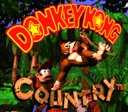
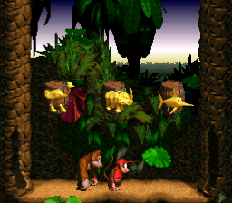
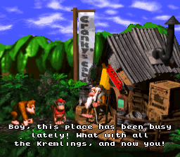
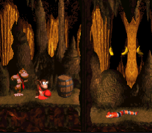

Donkey Kong Country, known in Japan as Super Donkey Kong, is a 1994 platform game developed by Rare and published by Nintendo for the Super Nintendo Entertainment System (SNES). It follows the gorilla Donkey Kong and his nephew Diddy Kong as they set out to recover their stolen banana hoard from the crocodile King K. Rool and his army, the Kremlings.
The player traverses 40 side-scrolling levels as they jump between platforms and avoid obstacles. They collect items, ride minecarts and animals, defeat enemies and bosses, and find secret bonus stages. In multiplayer modes, two players work cooperatively or race.
Platformer, Multiplayer




SNES console
None